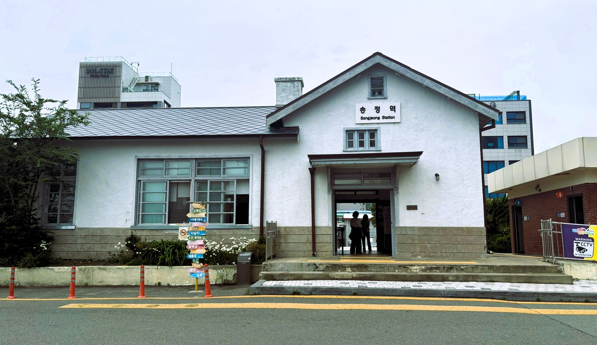
경성대에서 지하철을 타고 버스로 환승한 뒤 3분 정도 걸으면 나오는 '송정역'이다. 아침에 가서 그런지 사람이 거의 없었다. 일찍 온 사람들도 기차역 오픈시간을 기다리며 시간을 보내고 있는 모습을 볼 수 있었다. 기차도 탑승해 보고 싶었지만 오픈시간까지 많이 기다려야해서 어쩔 수 없이 다른 장소로 발걸음을 옮겼다. 사실 날씨가 별로 좋지 않았다. 흠.....
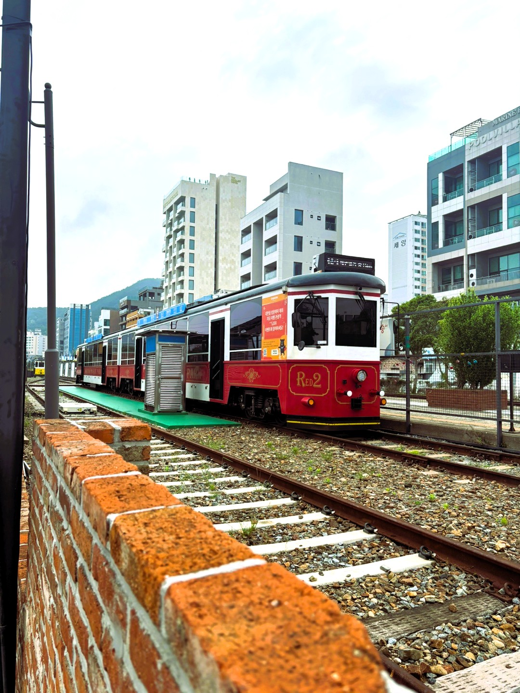
기차도 탑승해 보고 싶었지만 오픈시간까지 많이 기다려야해서 어쩔 수 없이 다른 장소로 발걸음을 옮겼다. 이 글을 보시는 여러분은 꼭 타보시길 바랍니다. 근데 아마 1회 탑승권이 8,000원인가 하고 2회 탑승권이 12,000이었던 것 같습니다. 음 근데 이 가격이면 문토스트가서 배터지게 먹을 듯...근데 타본 사람들의 말을 들어보면 해변열차 안에서 보는 풍경이 되게 이쁘다고 하네요.
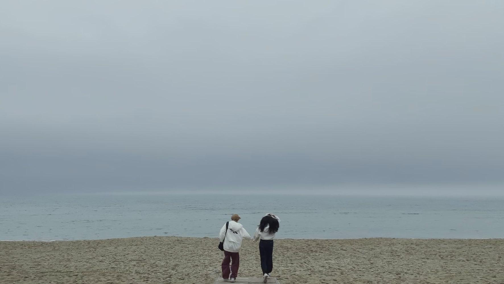
바다로 달려가는 이가영 학우님과 저의 모습입니다. 솔직히 날씨만 좋았으면 진짜 이쁘게 나올 수 있었는데 아깝습니다. 하늘을 이쁘게 합성 해볼까 생각을 했지만 티가 날 것 같아서 하지 않음..
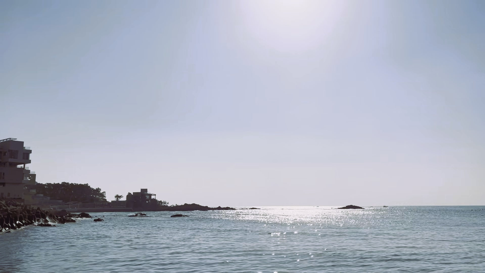
이건 너무 잘 찍었죠..? 아침 7시에 가면 떠오르는 햇빛가 함께 멋진 사진을 건질 수 있답니다. 여러분 MT 갔을 때 새벽에 나와서 한 번 찍는 걸 추천드립니다.해변에서 산책이나 런닝 그리고 서핑하는 사람들이 너무나 보기 좋았습니다. 여유있는 모습과 자신을 계발시킬 수 있다는 시간이 있다는 것이 부러웠기 때문이죠..여러분도 자신에게 힐링과 여유를 주며 취미생활을 즐길 수 있는 사람이 되었으면 좋겠네요.
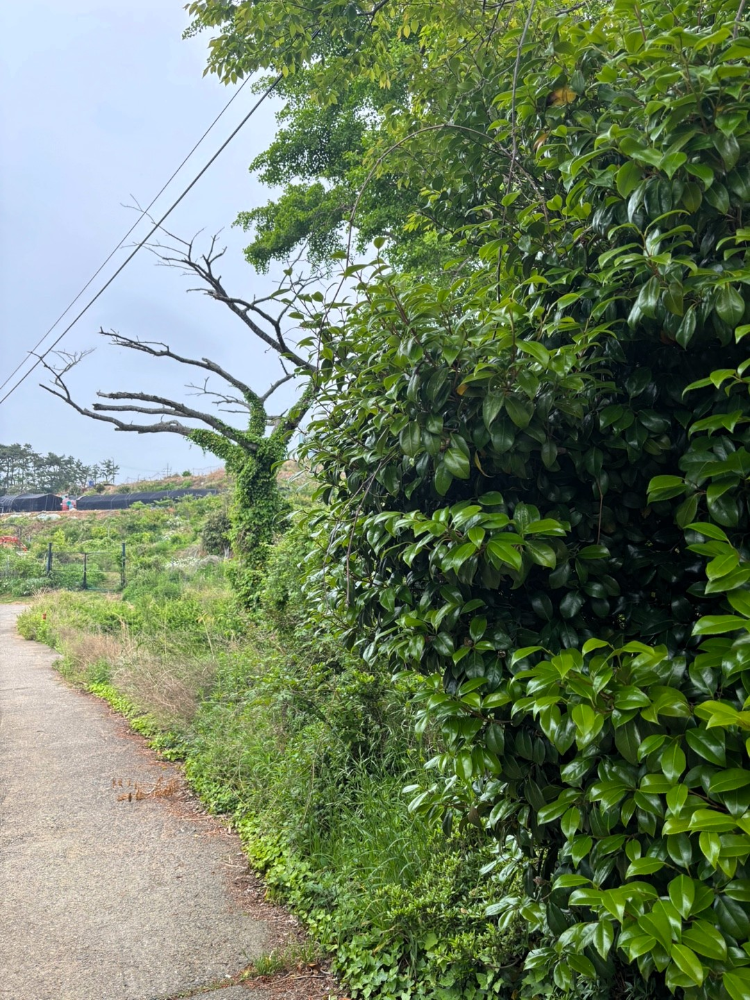
해동용궁사를 절대 걸어서 가지마세요. 너무 힘듭니다. 오르막이 너무 많고 특히나 날씨가 습했던지라 너무나도 더웠습니다. 자차 있으신 분들이 있다면 추천드립니다. 자차가 없다면 꼭 버스를 타는 것을 추천드리는데, 그래도 좀 걸어야 합니다. 그래고 고생 끝에 간 해동용궁사는 좋았답니다.
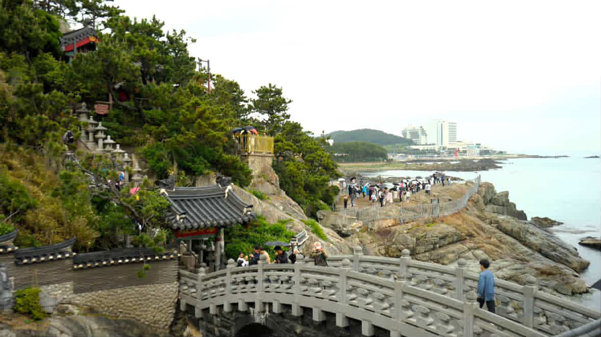
힘들게 올라 온 뒤에 본 풍경이라 그런지 매우 아름다웠습니다. '바다 위에 있는 절 ' 이거 정말 큰 메리트라고 생각을 합니다. 보통 절은 산 속에 있는데 바다와 붙어있어서 그런지 신선한 경험이었습니다. 학기 중 여유가 되실 때 한 번쯤 방문해보시길 바랍니다. 부모님과 함께 간다면 더욱 좋을 것 같습니다.
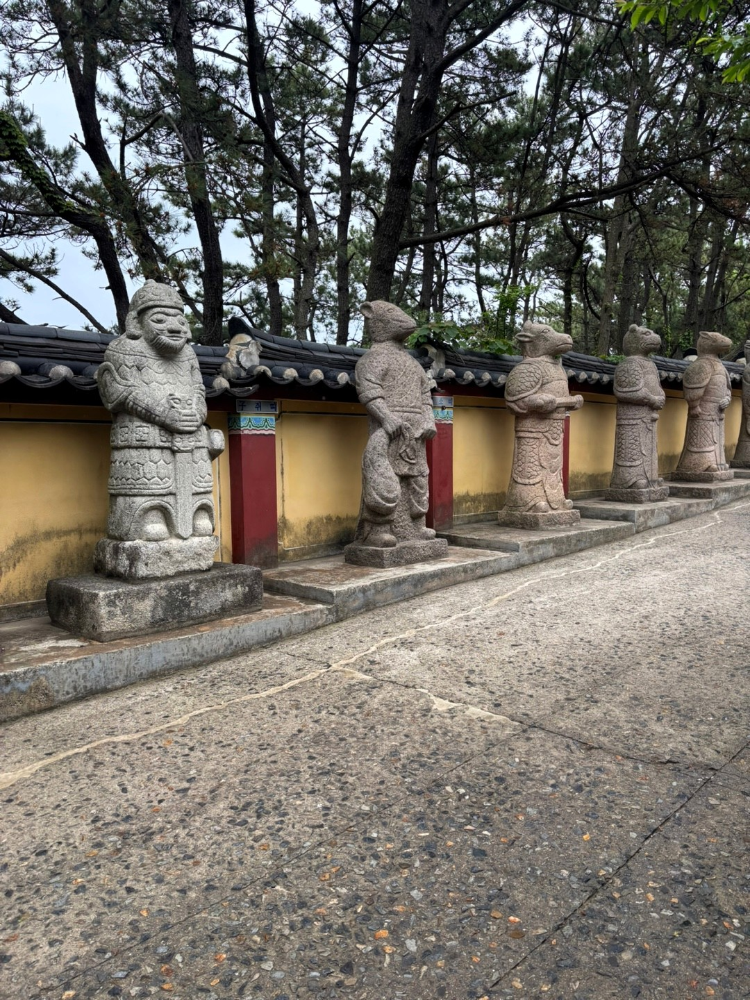
기념품과 음식을 파는 곳을 지나면 제일 먼저 보이는 것은 동물불상 입니다.
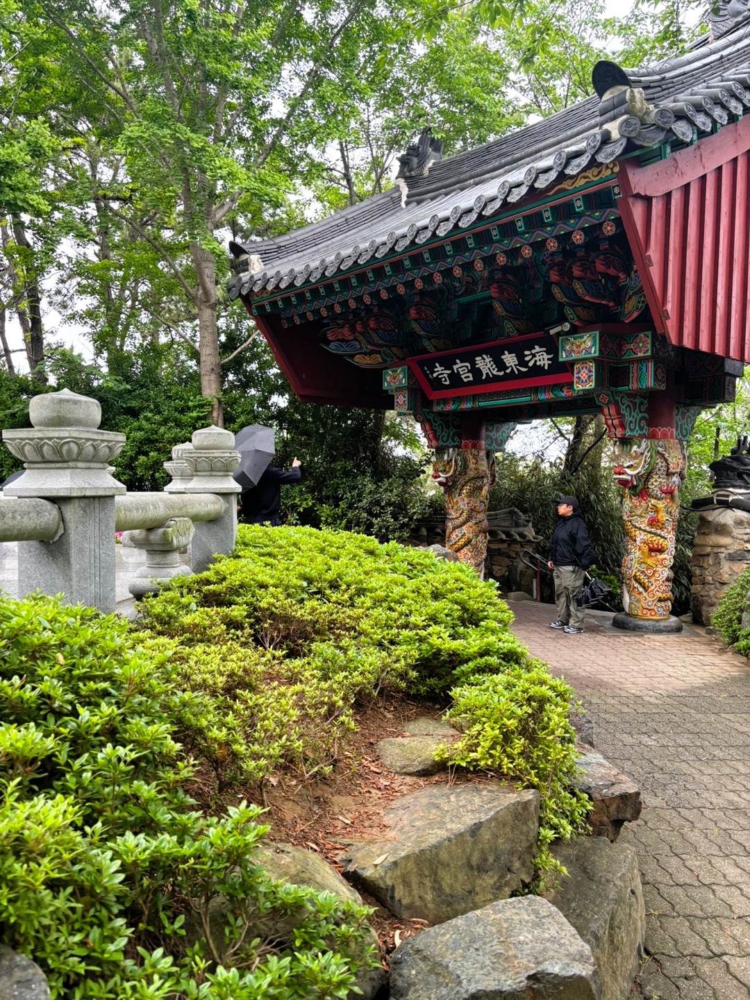
해동용궁사를 가면 사진에 보이는 곳으로 가는 곳이 있고 맞은 편에도 가는 곳이 있습니다. 어느쪽으로 가도 다 이어져 있어서 상관은 없지만 사진에 보이는 곳으로 가는 것을 추천드립니다. 맞은 편 입구로 가면 해동용궁사를 나갈 때 많은 계단을 올라가야 합니다...
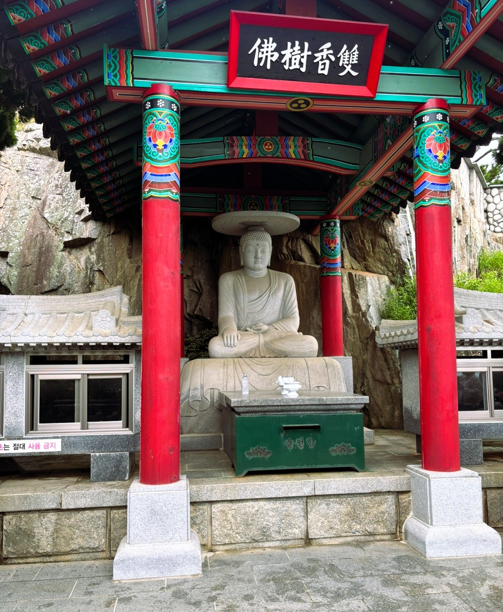
해동용궁사 내부 불상입니다. 이 불상이 있는 곳을 지나면 바다와 가까이서 찍을 수 있는 해동용궁사만의 장점인 바다 사진 존이 있습니다. 많은 관광객 분들이 여기서 찍으시는데 여기서 찍으면 해동용궁사도 보이고 바다도 보여서 멋진 사진을 건질 수 있습니다.
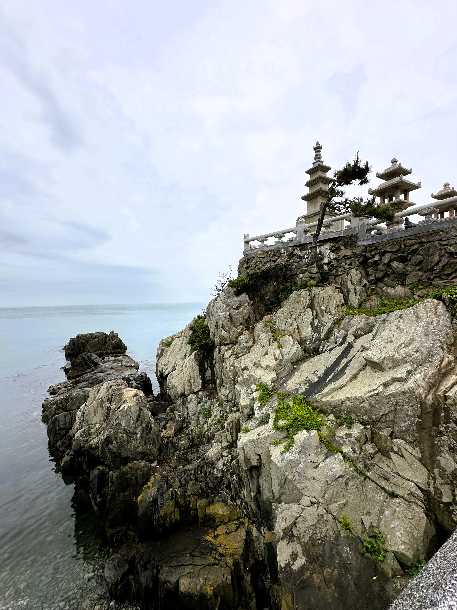
해동용궁사 주변 풍경입니다. 멋있는 것 같습니다.
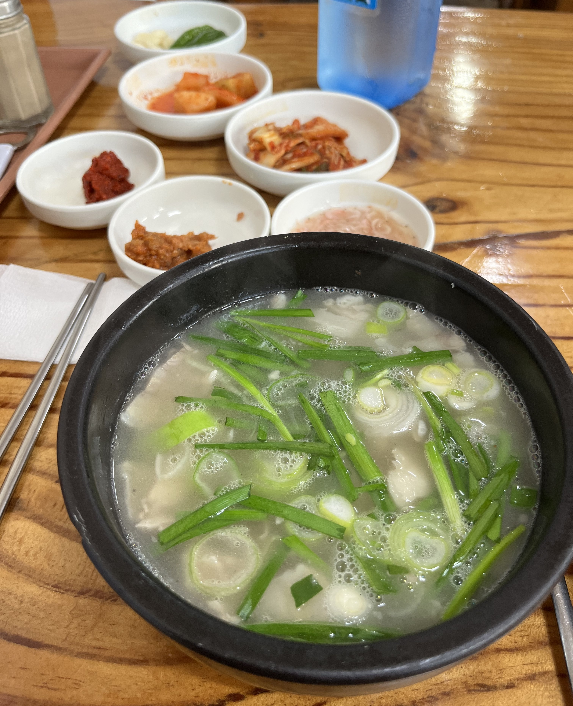
일출 후 먹은 국밥 한 그릇을 먹었는데.. 이 집은 추천하지 않습니다. 이 집이 궁금하신 분들은 따로 연락을 주시면 가르쳐 드리겠습니다.
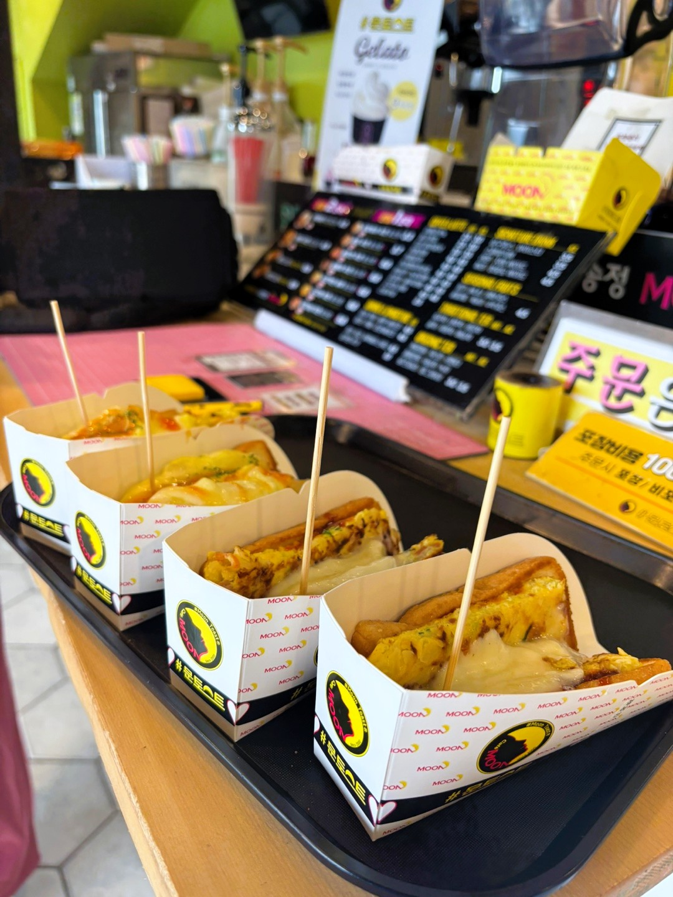
사장님이 매우 친절하십니다. 오픈 시간이 아니었지만 혹시나 해서 찾아갔는데 영업중이라 하셔서 사장님과 재미있는 이야기도 나누고 맛있는 토스트와 주스를 마시고 왔습니다. 문토스트 송정 본점이 유명한 까닭을 알게 되는 시간이었습니다.
댓글 남기기